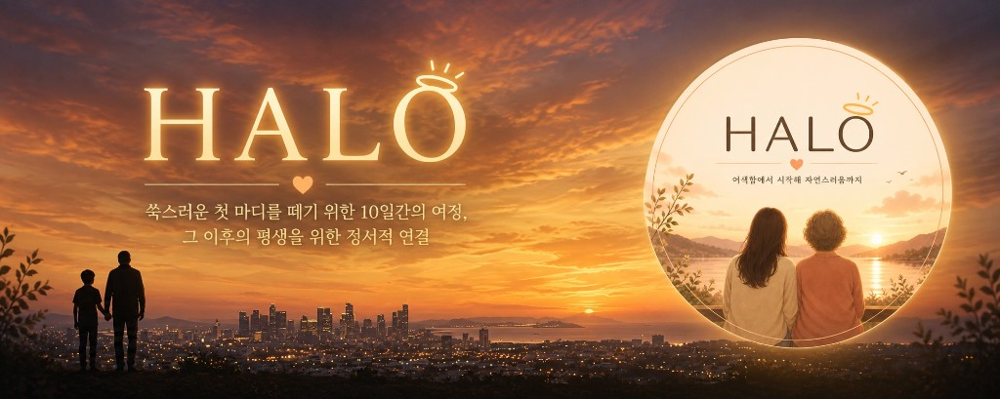

HALO (안녕)
매일의 ‘안녕’이 모여 영원한 ‘안녕’이 될 때까지, 부모님과 나의 시간을 잇다
안녕(安寧) — 아무 탈 없이 편안함을 뜻하는 한자어입니다.
우리는 매일 만날 때와 헤어질 때 ‘안녕’이라는 인사를 건넵니다. HALO는 매일 부모님의 무탈함을 묻는 가벼운 인사가, 훗날 우리 곁을 떠나시는 마지막 인사의 순간에도 슬픔만이 아닌 따뜻한 추억으로 남기를 바라는 마음에서 시작되었습니다.
여러분이 생각하는 효도는 어떤 모습인가요? 명절이나 생신 같은 특별한 날에만 챙기는 일회성 이벤트, 혹은 큰 마음을 먹어야만 실천할 수 있는 무거운 숙제처럼 느껴지지는 않으신가요?
우리는 부모님을 사랑하지만 표현이 서툴고, ‘효도는 거창하고 어려운 것’이라는 생각 때문에 소중한 골든타임을 놓치기도 합니다. 비정기적이고 물질 중심적인 효도의 페인포인트를 매일의 안부를 주고받는 가벼운 일상의 연결로 전환하고자 서비스 HALO를 기획했습니다. 스토리 모드·일일 미션·기록으로 부담 없이 대화를 시작하고, 단계적인 질문·서사로 관계의 문턱을 낮추는 UX를 검증하고 있습니다.
01 · 이름과 출발점
안녕(安寧) — 무탈한 하루가 쌓이는 길
서비스명 HALO는 일상 속 가벼운 인사 안녕에 ‘무탈·편안함’의 뜻을 겹칩니다. 작은 확인과 대화가 쌓여, 시간이 지나도 마음이 이어진다는 가설 위에 서 있습니다.
02 · 현실의 간극
특별한 날의 효도 vs 놓치는 평일의 연결
이벤트형·물질 중심 효도만으로는 정서적인 공백이 메워지기 어렵습니다. 부모님이 원하는 안심과 자식이 실천하고 싶은 표현 사이 간격을, ‘매일 조금’으로 좁히는 게 과제였습니다.
03 · 기획 방향
가벼운 루틴으로 깊어지는 질문
10일 진입 구간과 이후 장기 여정을 가정해, 미션·스토리·기록 단위로 책임을 나눈 인터랙션을 설계합니다. 앱 경험이 아니라 두 사람의 속도에 맞는 대화 장치를 만든다는 기준으로 디자인·프론트·백 협업을 열어 두었습니다.
세부 유저 시나리오·컴포넌트 레벨까지 담긴 리크루팅용 기획 페이지와 팀 빌딩 방향은 아래 링크에서 확인할 수 있습니다.